新的车辆由底盘、轮组、电池、充电模块、配电线束、控制器、传感器和外壳分别组成。参数和布局改变后，三维结构会同步更新。
先停下来，看清正在发生的动作
点击三维工具栏的暂停，停住当前动作；按钮变为继续，再次点击即可恢复。暂停时，鼠标旋转、平移和缩放仍然可用。
| 当前场景 | 暂停 | 重置 |
|---|---|---|
| 行驶回放 | 停住回放进度、车辆和行人 | 回到起点，并保持暂停 |
| 工厂观察 | 停住风扇、门、抽屉与装配动作 | 收回电池、合门、取消展开，恢复整车近看 |
| 第22步装配 | 停住正在进行的装配动作 | 回到装配动画起点，点击继续依次重播已完成工位，保留完成记录 |
重置只恢复观察与动画状态，不会删除当前工程和实验数据。
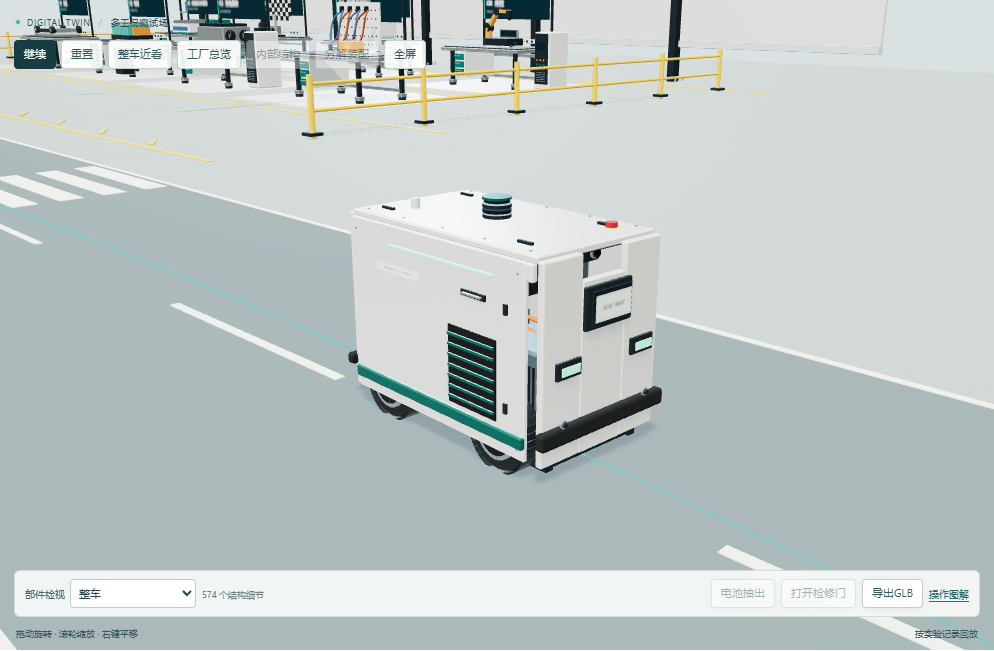
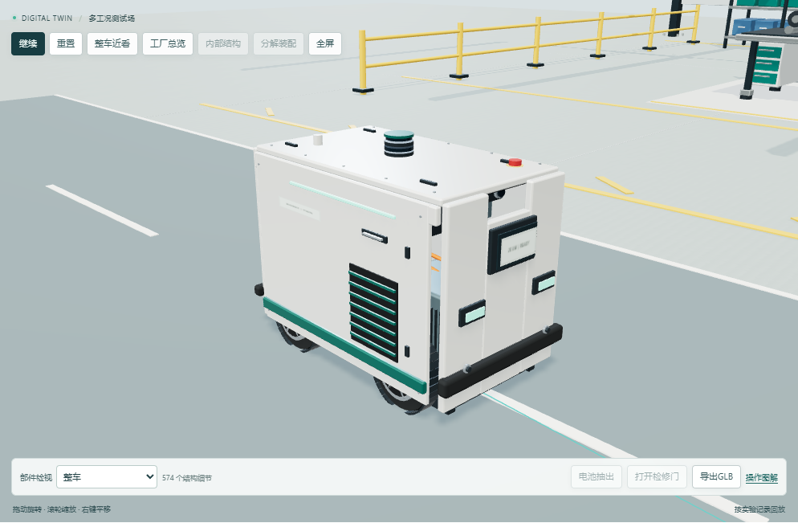
01先看整车，再看内部
点击整车近看，镜头会移到车旁。需要更大画面时，点击全屏，按 Esc 退出。
点击内部结构，观察电池、充电模块、线束和控制器的位置。按钮变为整车外观后，再次点击即可恢复外观。

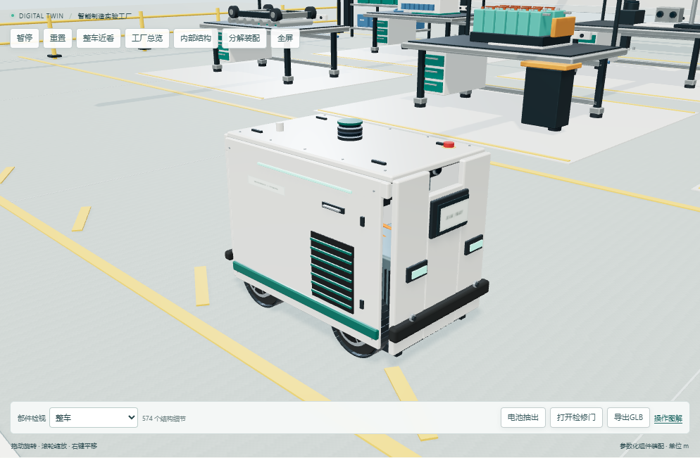

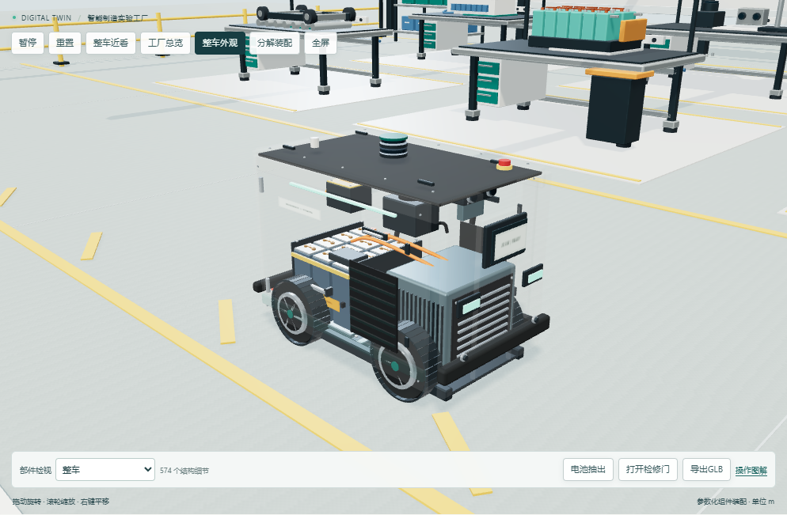
02展开部件，观察装配关系
点击分解装配，部件向不同方向平滑展开。使用下方的展开滑块调整间距；再次点击按钮可收回。
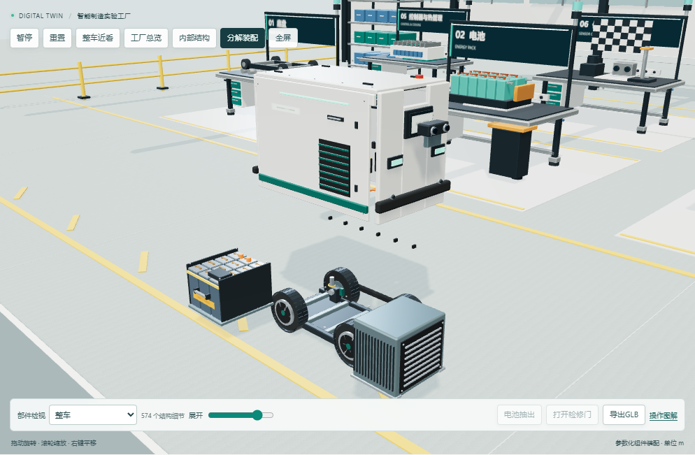
在部件检视中选择电池、底盘或传感器，镜头会移动到相应位置。选择整车可回到整车观察。实际装配环节中，尚未安装的部件需先完成对应工位，才能检视。

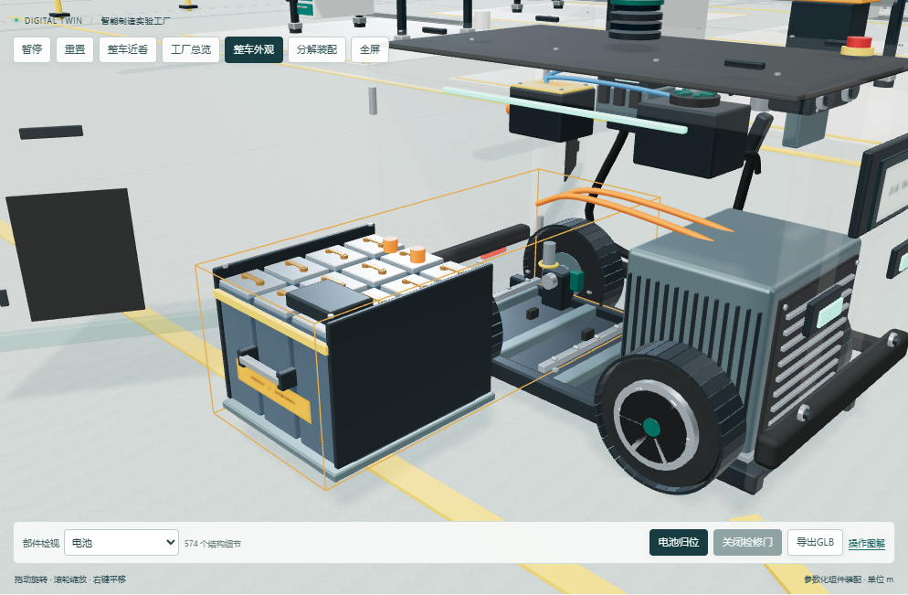

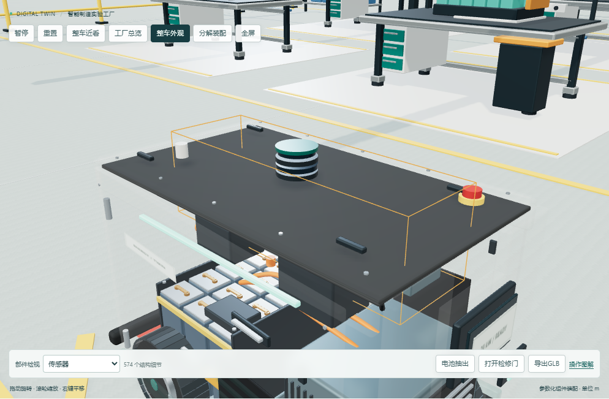
03抽出电池与检修门
先收回分解视图，再进行拆装观察。
- 点击打开检修门查看开口；也可直接点击电池抽出，平台会先开门，再让电池沿设置方向抽出。
- 抽出前会校验门洞、车外净空和沿途阻挡。如果提示检查未通过，先回布局设置核对开口、方向和间隙，再重试。
- 点击电池归位，等待电池收回。电池仍在外侧时，关门按钮不可用。
- 归位后点击关闭检修门，恢复完整外观。
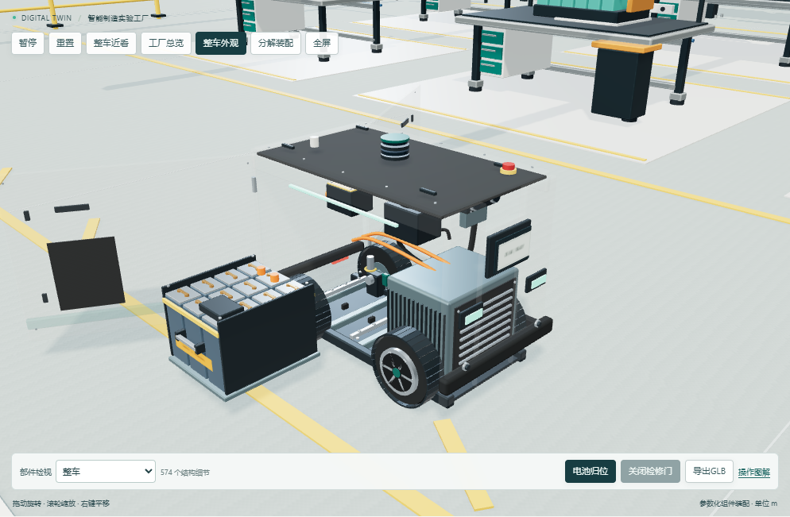
门洞与拆装检查使用平台的教学几何规则。画面可以帮助理解部件关系，不能用作实体车辆加工尺寸或认证结论。
04回到工厂，完成实际装配
点击工厂总览查看8个工位。每个工位有对应物料、夹具和检测设备。
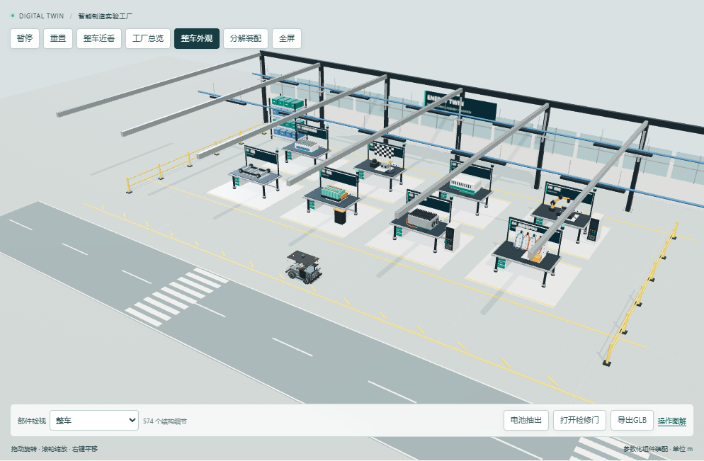
在第22步，若当前工程还没有装配记录，车辆从空装配开始。依次点击页面中的实际工位按钮：
部件会按对应方向装入，页面记录已完成工位。终检还需要结合当前设计检查结果。
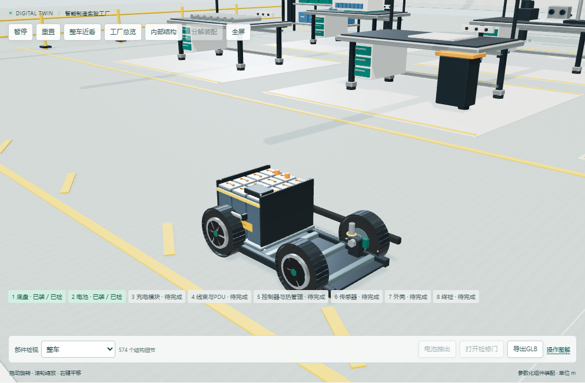
05按运行记录回放
完成工况运行后，车辆按记录的位置、朝向和时间运动。轮胎、转向和行人动作跟随回放进度；拖动进度条可以查看某个时刻。历史运行使用该记录保存的车型和布局。
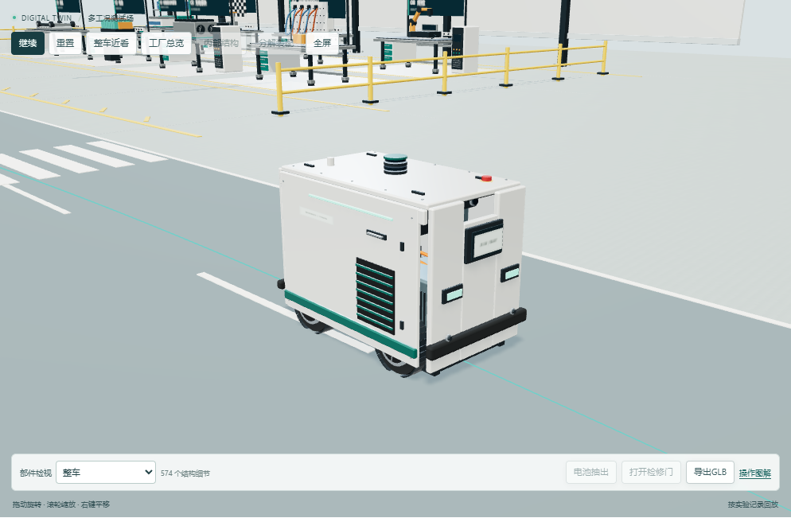
回放时，内部结构切换、分解装配、电池抽出和检修门操作不可用，仍可通过镜头控制观察车辆。
行人采用带骨骼动作的工人模型
当前人物采用Microsoft Rocketbox提供的工人及行走动作，保留MIT许可。面部、手部、工服、安全帽与工具均来自该资产；平台按本次运行记录中的移动距离采样步态，暂停或拖动进度时不会独立漂移。
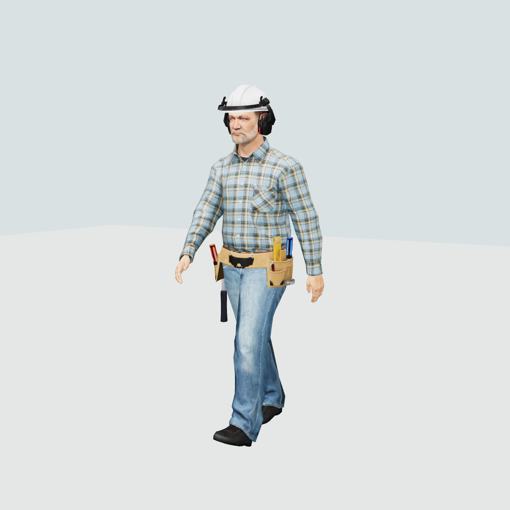
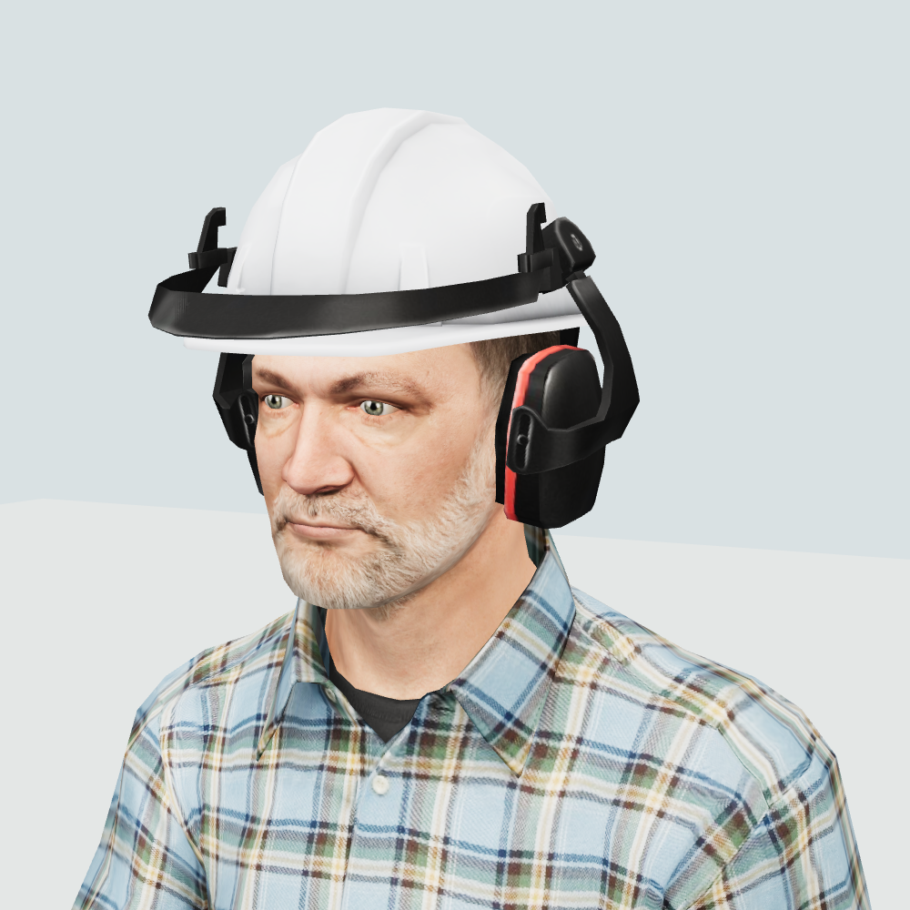
Copyright (c) 2020 Microsoft · MIT。许可与来源见随包assets/licenses。
06导出模型，继续编辑
点击导出GLB，浏览器会下载当前参数的整车模型。文件保留机械部件分组，可用支持GLB的软件打开。
导出的是标准装配状态整车，不包含工厂、实验日志以及当前展开或抽出造成的临时位移。
园区车型约有574个结构细节，道路车型约578个，工厂约940个。细节包含电芯、紧固件、轮组、壳体和连接器；静态表面已合并渲染，数量不等于每帧绘制次数。
Blender可编辑母版
另有 EnergyTwin-component-master.blend 建模源文件，可继续编辑部件和动画。母版包含9条动画编辑源，关键帧如下：
| 帧 | 查看状态 |
|---|---|
| 1 | 标准组装 |
| 40 | 部件展开 |
| 145 | 打开检修门 |
| 180 | 电池抽出 |
| 250 | 归位 |
母版保存在交付目录 outputs/energy-twin-modeling。Blender渲染预览属于建模工作画面，不是平台截图。
新增模型与程序贴图均为本项目原创教学结构，没有下载第三方整车模型，也不声称来自实体车辆CAD。